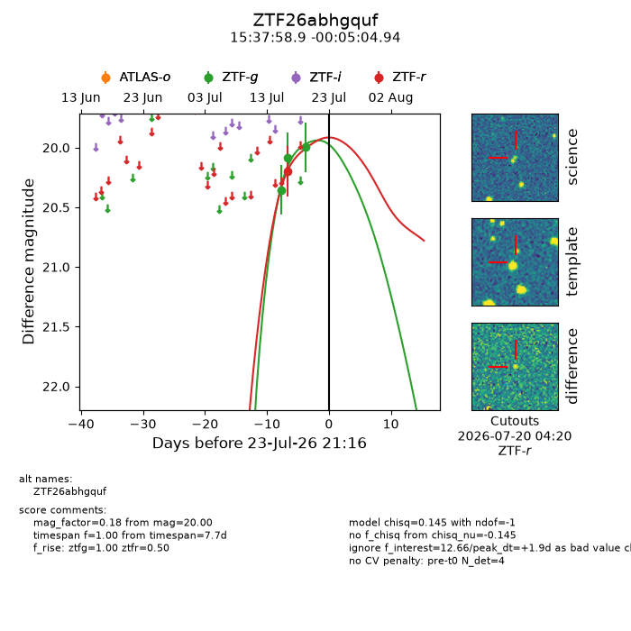
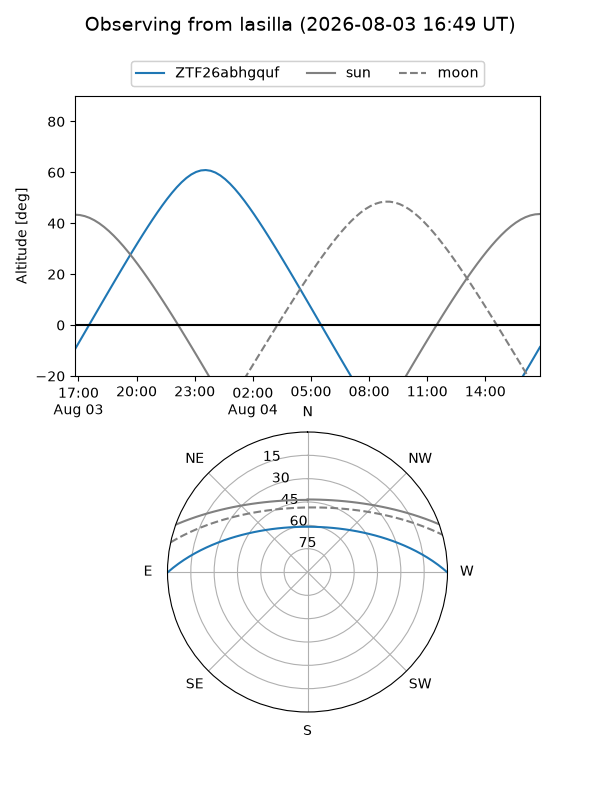
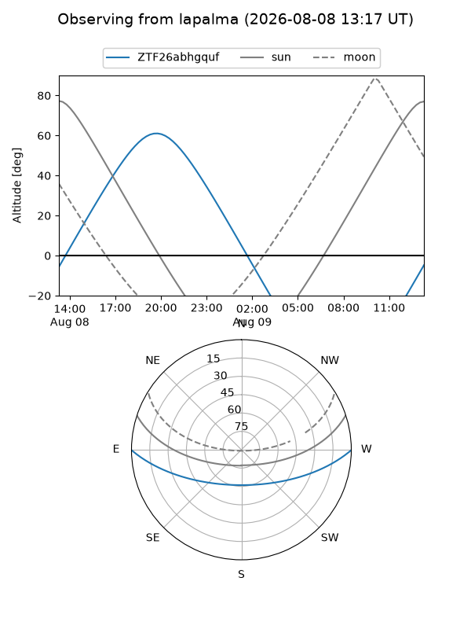
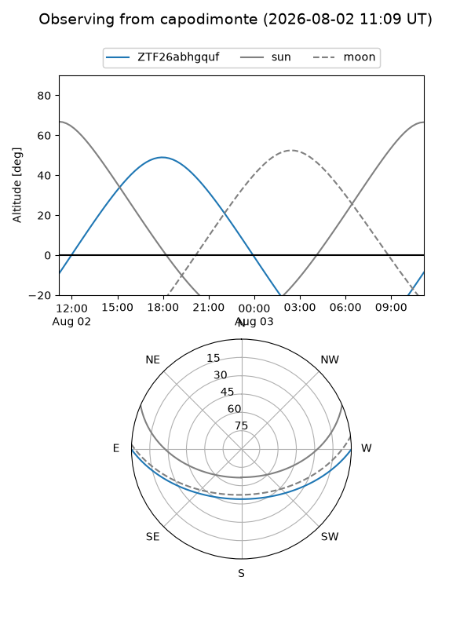
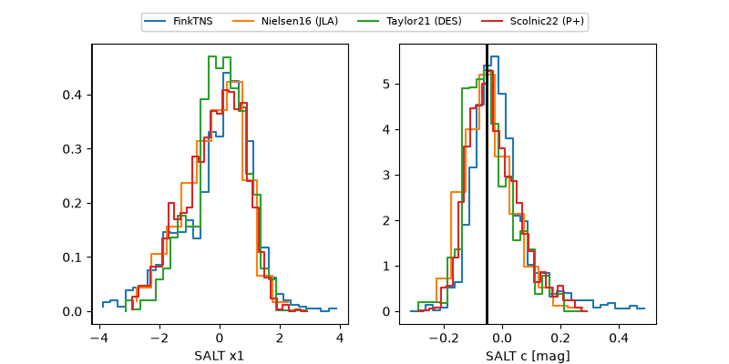

ZTF26abhgquf
Target ZTF26abhgquf at 2026-07-23 21:19
Aliases and brokers:
FINK-ZTF: ztf.fink-portal.org/ZTF26abhgquf
Lasair-ZTF: lasair-ztf.lsst.ac.uk/objects/ZTF26abhgquf
ALeRCE-ZTF: alerce.online/object/ZTF26abhgquf
Direct TNS query: direct search
alt names
ZTF26abhgquf (ztf,fink_ztf)
Coordinates:
equatorial (ra, dec) = 234.4955,-0.08470
equatorial (HMS+DMS) = 15:37:58.93,-00:05:04.94
galactic (l, b) = (5.6872,+41.64279)
Flags:
peak dt: +1.9
Photometry:
last ztfg=20.00, ztfr=20.20
3 ztfg, 1 ztfr detections
Lightcurve

Visibility



Additional plots
